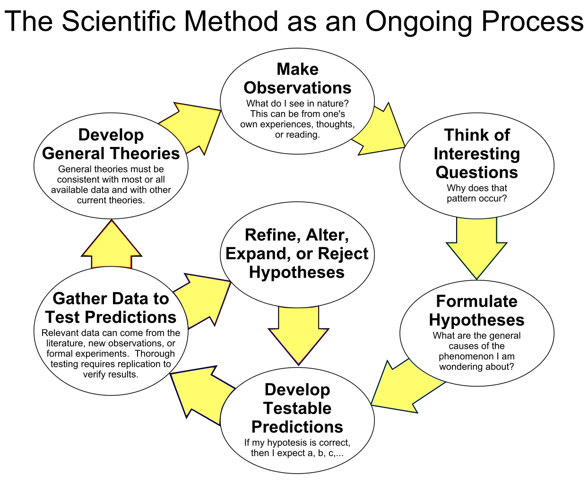

JMH: Designing good benchmarks
There is a measure of knowledge and skill required to build good JMH benchmarks. This is true at the single unit scale and at the multi-unit scale. I am hesitant to use the term "component" here because JMH tests should be directly calling code, not interacting with an API.
Data
The data we choose for any benchmark is critical. For each domain good data looks a little different. I do have a few prescriptions for success.
- Vary data per invocation when possible, generate it at the iteration level. Use a circular Array to provide data to the benchmark.
- Parametrize different modes of data, when appropriate. For example, if you are testing a sorting function, test with mostly sorted data, prod like data, and worse case data as 3 separate test runs.
- Have intent behind your data, even if you are generating it. Your data should reflect the context of your benchmark and the code that is going to be executed.
- Explicitly state your assumptions somewhere, ideally thru very clear code.
Common Techniques
Use enums for configuration
Enums are ideal for configuring a benchmark. Imagine you have an application where a customer could subscribe to a data feed with many parameters. Each defines transformations on the raw data that needs to be performed. Not all transformations are compatible, and, even if they were, there are far too many to test. We can use Enums to easily define many different test modes.
Lets imagine we are testing an in memory data structure which holds some online auction data. And we want to subscribe to changes in its state its state.
@State(Scope.Benchmark)
public static class SomeState{
Callable<CharSequence> subject;
@Param({"BASIC_ALL_PRODUCTS", "BASIC_ELECTRONICS"})
public SubscriptionTypes type;
@Setup(Level.Iteration)
public void setup(){
subject = type.buildDataPipeline();
}
}
public enum SubscriptionTypes{
BASIC_ALL_PRODUCTS{
@Override
public Callable<CharSequence> buildDataPipeline() {
return buildPipeline(5, 0, "ALL");
}
},BASIC_ELECTRONICS{
@Override
public Callable<CharSequence> buildDataPipeline() {
return buildPipeline(5, 0, "Electronics");
}
},MEGA_QUERY{
@Override
public Callable<CharSequence> buildDataPipeline() {
return buildPipeline(250, 0, "ALL");
}
};
public abstract Callable<CharSequence> buildDataPipeline();
}
There are a couple things to note in the above code that are important when using enums. First the enum should build the state for you each time its method is called. This gives the benchmark the power to say when that object is built. The instance is stored in an instance field on the state object.
Next, this example is very simple, but we can see a potential need for passing in arguments to our enum builder form our benchmark. This is often the case if our benchmark is setting up something that our pipeline here depends on.
Limit use of invocation setup
Per the java docs, we should be very careful using a per invocation setup or teardown. PLEASE be very careful if you want to use it, and understand all the warning.
Varying data between invocations
We do want to vary our data, when possible, within a benchmark iteration. This helps us avoid some JIT optimizations by keeping the data changing. Whats more, is avid some overly optimistic cache efficiency.
Lets look at this example.
@Fork(1)
@Warmup(iterations = 1, time = 5)
@Measurement(iterations = 1, time = 5)
@BenchmarkMode(Mode.SampleTime)
@OutputTimeUnit(TimeUnit.NANOSECONDS)
public class Design_3 {
@State(Scope.Benchmark)
public static class SomeState {
public Consumer<StringBuilder> subject = (s) -> { Blackhole.consumeCPU(4000); };
@Param({"200"})
public int numberOfData;
@Param({"123456"})
public long randomSeed;
private List<StringBuilder> data = new ArrayList<>();
private int nextIndex = 0;
@Setup(Level.Iteration)
public void setupData() {
Random r = new Random(randomSeed);
for (int i = 0; i < numberOfData; i++) {
data.add(Helpers.generateData(r));
}
}
public StringBuilder getNextData() {
nextIndex++;
return data.get(nextIndex % data.size());
}
}
@Benchmark
public void testMethod(SomeState s, Blackhole bh) throws Exception {
s.subject.accept(s.getNextData());
}
@Benchmark
public StringBuilder baseline(SomeState s) {
return s.getNextData();
}
}
So lets break down what is happening here. Lets start with our state object. We start of with a subject, which is what we are trying to benchmark. This would be our production Object that we want our benchmark to call into.
Next, we expose the number of data entries. The scope of our data can impact our cache efficiency, and by exposing it as a param we can adjust it from the command line if we wanted to.
Next, we expose our randomSeed as a param so, if we wanted to, we could run multiple different tests with differing seeds if we want to. This lets us be confident that we didn't get a lucky or unlucky.
Next we have our fields for data and our nextIndex. We just us a regular array list for storing this data. Any data structure is suitable here that has either constant time indexing, or has a built in circular ability that is constant time. One thing to note in the getNextData function, is that we are just doing math to calculate the index to get, and not branching.
if(nextIndex>=data.size()) nextIndex=0;
We could easily envision the above line in this code, but branches are tricky as we noted in the hardware chapter. This would introduce jitter into our benchmark method, all be it a very small amount. Using a modulus avoids that jitter. The irony is that its much more expensive than the if. But that stability is golden.
Lastly we not only have a testMethod that is our real benchmark, but we also have a baseline. This baseline can be used to see how expensive getNextData really is in this context. While we might not need it here, its good to have this data handy.
State is not limited to inner classes
While in most of these examples, state is an inner class of the class that defines the benchmark methods, that is not required. There are no limitations placed on @State objects, besides that Param fields are public and there is a default constructor. We can include as many or as few as we want for each benchmark method.
This means they can have behavior in addition to state, just like any other class. This lets us build modular state, composing what we need for each benchmark.
With that said, we must be careful. Behavior takes time, so we should always baseline interactions with our state objects. This lets us subtract out their contribution to the measured service time of our benchmark.
Peer review
Performance testing is a science, and like any science there are a few key points. We all have seen diagrams like this before, going back to grade school.

As we can see here, science is an ongoing process, but there is a critical part of science that is missing in the above diagram. And its peer review. At each stage in the above diagram, we should be checking in with our peers. Should I even write a microbenchmark? What do you think of this my hypotheses? Can you review my procedure and data for potential errors? Do you think my conclusions are justified based on the data?
All of these are questions we should be asking when writing microbenchmarks. Not only should you expect to be challenged, you must seek out challengers to be confident in our conclusions.
Unit level benchmarks
Unit level benchmarks are designed to primarily test a single class of code. Maybe 2 tightly coupled classes like a custom record store and a manager of that record store can fall under this category as well.
Grouping operations
The first step to unit level benchmarks is making sure that your unit isn't too small. Benchmarking data structures are a good example of a situation where to measure the unit, it may be best to perform some meaningful workload. Using a map as an example, measuring the call time of a put in an empty map isn't very interesting. Measuring 3 puts and 5 gets into a pre-initialized map is more interesting.
You can define this test behavior right in the benchmark code. I.e. a 90% read, 10% write workload could define 1 operation as 9 reads, and 1 write, and then have a few different permutations of that workload across several benchmarks.
With all this said, this should not be our default. By its very nature, JMH will see our whole benchmark as one measurement and then simply divide our work which can soften outliers significantly. Imagine if 9 out of 10 reads are 0.1 us, and the 10th is 19.1us. JMH in SampleTime mode will see this workload as 20us. But we would get the same result if each call to read took 2.0 us.
This simply means we have to be careful when we talk about our results, and it limits the conclusions we can draw from them.
The @OperationsPerInvocation(3) annotation can be tempting to normalize results, but do try to resist the temptation. While this may normalize or average, it skews your error and changes the meaning of your percentiles significantly.
Grouping may be a necessity in order to keep the subjects in a steady state.
A need to use average time
At a certain point, the observer affect starts to dominate our sampleTime measurements. Taking nano precision and timestamps before and after each invocation takes typically 10-40 nanoseconds, milage will vary significantly based on JDK, OS, and hardware setup. And even then, different OS's and hardware have different granularity of nanotime. There is a wonderful article on this called Nanotrusting the nanotime.
Generally, we should be skeptical of using sample time once our methods call time on average is less than several times nanotime's granularity on our platform. And the only way to know that is to test it.
The unit level sweet spot
Assuming a typical setup where nanotime accuracy and granularity are <30 ns, we should aim for unit level benchmarks that are greater than 250 ns (Circa 2021). This is simply because JMH may struggle to measure our method in sample mode.
Just because that is the sweet spot, that does not mean we can't write benchmarks that test things that are faster than this. We just have to be extra careful and ensure that our tests are actually testing what we intend for them to test.
Multi-unit benchmarks
Multi-unit benchmarks are ideal for measuring up to and including all the work that happens in a single thread in production. This is because our benchmark method should be synchronous.
Knowing how to group units
There is 1 rule to follow: measure service time. As mentions earlier, we typically don't want to measure queue time. This means we should not create threads outside of the threads that JMH makes for us. So, a great group to start with is with whatever is currently your thread boundaries in your application.
Well designed code should be easy to synchronously push data into and either return output data or push it to another queue. Either way, output data should be sent to a blackhole.
© Erik Helleren, 2021. Built on 2021-06-15 from commit 29e90245. Buy me a coffee.